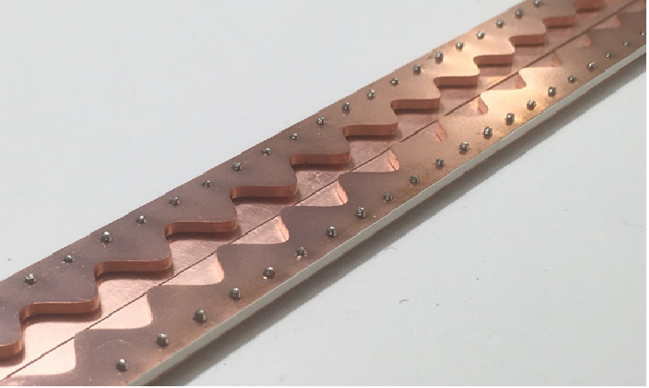
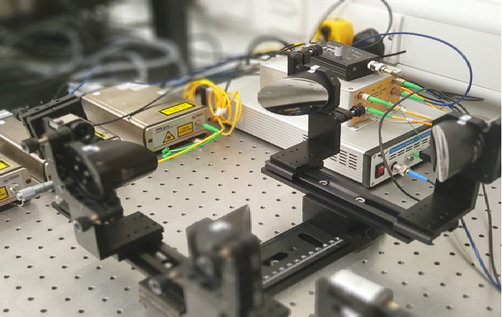
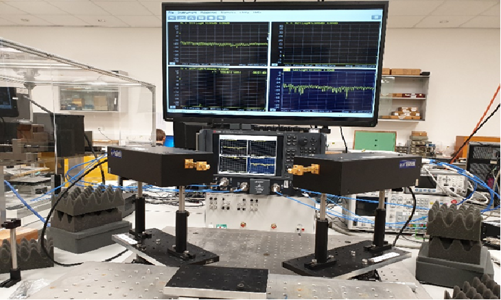

Metamaterial and Metasurface Engineering
The word Metamaterial is a combination of two distinct words “μετά” or “meta” meaning beyond and the word “materia” meaning matter. They are a class of materials that are engineered to have properties usually not found in naturally occurring materials. Metasurfaces are a dimensional reduction of metamaterials and are confined to 2-dimensions. They follow principles similar to metamaterial and are artificially engineered to behave as objects that are usually not found in nature and cannot be realized using classical electromagnetics.
Over time, several subcategories of surfaces have evolved under metasurface engineering, e.g., reconfigurable surface, Huygens’ surface, coding metasurface, etc., which have substituted their bulky counterparts for various applications such as negative refraction, scattering cancellation cloaking, reciprocal and nonreciprocal optical activity, absorption, multichannel surfaces, and transmission control. Progressive research on metasurfaces has resulted in an enormously expanded application domain over the past decade. The main advantages of metasurfaces compared to existing conventional technology include their easy integration due to thin profile, lower deployment and maintenance costs, and greater flexibility in tuning their behavior.
Such surfaces can be realized by applying Surface Electromagnetic Modelling (SEM) and usually follow construction methodologies such as equivalent circuit modeling to design frequency selective surfaces (FSS), the use of sub-wavelength unit cells to design metasurfaces, and holography techniques to design surfaces with an engineered radiation pattern. With advancements in computer modeling and fabrication techniques, it has become possible to design and prototype complex and advanced engineered surfaces to achieve fascinating results.
SEMLAB was the first in the UK to demonstrate a fully functional Reconfigurable Reflecting Surface (RRS) operating in the sub-6GHz band capable of dynamically reconfiguring its electromagnetic aperture to solve potential coverage issues in future 6G networks. SEMLAB also demonstrated a static version of the reflecting surface based on holographic theory that could remove coverage blind spots at known locations without the need for any external power and could function completely on its own. Further research is underway at SEMLAB to design artificially engineered surfaces for mmWave and THz frequencies for beyond 5G applications that could enhance outdoor-indoor (O2I) coverage scenarios. The work conducted by SEMLAB in this field is widely considered a game-changer and has convinced the wireless community of the practical potential of metasurface engineering in solving major challenges in wireless communications.
Antennas and Arrays
Antennas, as defined by “The IEEE Standard Definitions of Terms for Antennas (IEEE Std 145-1983)”, is a means for radiating or receiving radio waves. It is a transitional structure that can transition electromagnetic energy between free-space and guided media. The science of antenna engineering dates back to the start of the 20th century when numerous demonstrations were done by several scientists for sending and receiving electromagnetic waves for the purpose of wireless communication or telegraphy.
From then to now, antenna engineering has been one of the most fascinating and highly researched fields of electromagnetics, attracting talents and research funding from across the world. Modern antenna engineering focuses on a wide variety of applications ranging from mobile communications to satellites to deep space communications, wearable technology, etc.
As these applications continue to evolve, so does the science involved in developing more and more challenging and complex antennas. From simple dipole and patch antennas to modern-day advanced antennas that rely on the complex and fascinating science of surface electromagnetics, antenna engineering is one such field that continues to evolve at a steady pace, requiring better and highly advanced research facilities.
SEMLAB is one such place where we continue to push the boundaries of state-of-the-art antenna technology and keep researching and collaborating to design novel antennas that are better performing, highly efficient, compact, and suitable for a wide variety of applications.
THz Technology
Positioned between the microwave and optical frequencies, the Terahertz (THz) frequency band usually refers to the spectral gap from 0.1 to 10 THz (1 THz = 1012 Hz). Though microwave and optical technologies have seen phenomenal advances, THz technology has remained underdeveloped until recent times. The two main reasons behind this are:
(i) Compared with radio frequency (RF) and infrared radiation, THz waves attenuate dramatically in the Earth’s atmosphere, which conventionally leads to a lesser commercial interest in the development of such technology.
(ii) It is quite challenging to come up with efficient THz sources, detectors, and modulators using conventional fabrication techniques.
However, in recent years, we have seen rapid advances and breakthroughs in fabrication techniques that have given a ray of hope to Terahertz technology being a game-changer for the next generation of electromagnetic-based applications. It can offer new horizons, as an interdisciplinary science, to different areas such as biomedicine, security, defence, and communication and can pave the way for the development of several new applications.
Due to its capability of analyzing molecular dynamics, THz spectroscopy and imaging have shown great potential in the detection of cancerous tissues, explosives, weapons, and illicit drugs wrapped in typical packaging materials. Because of its nonionizing nature, THz radiation-based screening eliminates the ionization risk inherently present in conventional X-ray methods.
In the domain of wireless communications, OFCOM has been repeatedly suggesting to the research and industrial community to step into the sub-THz spectrum and explore its capabilities for future communication networks.
At SEMLAB, we have been working on THz spectroscopy sensors for detecting different materials using a novel spectroscopy technique. One of our published works proposed a structure that demonstrated excellent measurement performance, distinguishing materials based on their unique spectral fingerprint.
In another project at SEMLAB, a photoconductive antenna operating at 0.5-2 THz was proposed, which shows a highly efficient method of generating THz waves compared to a lens antenna, with a much smaller footprint.
We are also conducting research on graphene-based plasmonic metasurfaces for the sub-THz spectrum, developing and measuring engineered surfaces capable of functioning at THz frequencies.
At SEMLAB, we aim to continue pioneering research on the sub-THz and Terahertz frequency bands to develop technologies such as Terahertz modulators, wavefront controllers, polarization controllers, THz sensors, switches, and propagation channel modeling for Terahertz waves. These technologies could enable several key enablers and game-changing applications.
Wave Propagation
With the deployment of 5G networks around the world and their growing popularity among users, research has commenced for the development and shaping of future 6G communication systems that can offer higher data rates, reduced latency, and better user experience. Several promising technologies have recently emerged that can satisfy the various concerns of the wireless communication industry to ultimately improve coverage and Quality of Service (QoS) even further for the end-user.
This can pave the way for a plethora of new technology enablers such as Terahertz (THz) communication, Artificial Intelligence (AI) in wireless, Ultra-Massive Multiple-Input Multiple-Output, Beam-forming and Beam-steering, Orbital Angular Momentum (OAM), and Reflecting Intelligent Surface (RIS). These technologies are at the forefront of development, enabling new use cases in wireless communications, such as cell-free access, backhaul/fronthaul link extensions, Unmanned Aerial Vehicles (UAVs), and the industrial Internet of Things (IoT).
It is well-known that the first and most crucial step for deploying a reliable and efficient communication system is the modeling of the propagation channel relative to the application scenario under investigation. Channel characteristics may vary significantly when moving from the sub-6 GHz to the THz spectrum, where severe attenuation characteristics are expected due to meteorological factors. The shorter wavelength causes scattering of the radio waves, limiting the range of communications.
In addition, with Doppler and beamforming capabilities still in their early stages at millimeter-wave (mmWave) frequencies, research into these technologies needs to be intensified to achieve more accurate characterization of the propagation channel.
At SEMLAB, we aim to address these concerns by conducting channel propagation measurements using our state-of-the-art facilities over frequency bands ranging from the sub-6 GHz up to the THz spectrum. This research could pave the way for several game-changing applications and technology enablers that will aid in the development of future channel propagation models for 6G networks.
